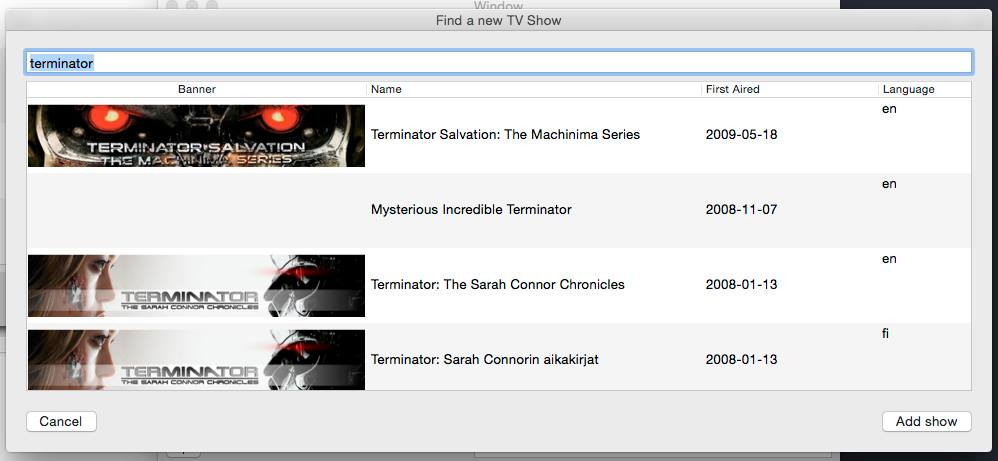
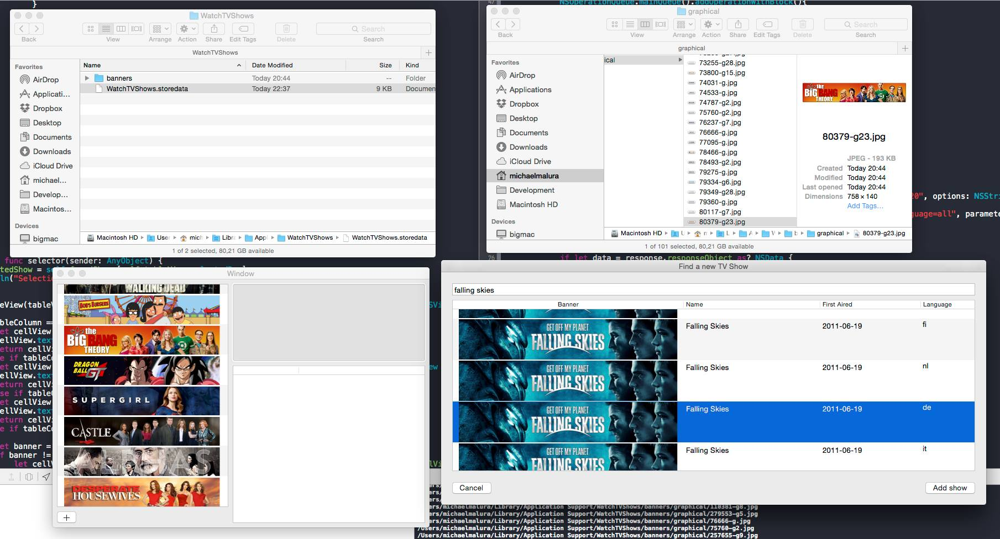

<!--
{
"title": "My first osx app",
"date": "2015-08-30",
"tags": "app prototype project osx"
}
-->
<p>After i created the html prototype of my watchlist tool i wanted to try out some swift.</p>
__MORE__
<p>
</p>